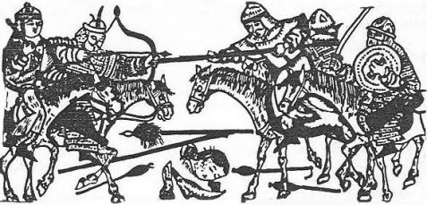
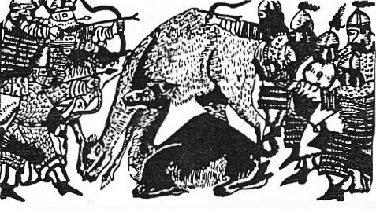
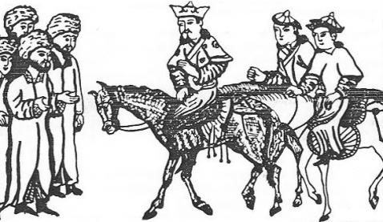

"Oğuz-Han'ın amcaları ile halkın birçoğu, Kara-Han'ın etrafına toplanmışlardı. Bu sebeple Oğuz-Han'ın onları zararsız kılıp emrine alabilmesi için 75 yıl harp etmesi gerekti. Kara-Han'ın adamları şehirlere hücum edip her tarafı yakıp yıktılar. Yağmalar yaptılar ve askerleri öldürüp durdular. Bu savaşlarda nihayet Oğuz-Han galip geldi. Devleti tamamen eline geçirdi.. Talas, Sayram'dan Buhara'ya kadar uzanan bölgeleri eline geçirdi. Bundan sonra bu yerlerin hepsi, Oğuz-Han'ın hâkimiyeti altına girdi.

Şekil 27: Oğuz–Han’ın, babası Kara-Han ile savaşı.
"Oğuz-Han'la anlaşamayan, kendi amcaları, erkek kardeşleri ile kendi kardeşlerinin oğulları, doğudaki ülkelere gitmişler ve oralarda yerleşmişlerdi. Buna rağmen Oğuzlar, doğuya giderek Moğol’ları meydana getiren bu kabileleri de, kendi soylarından sayarlardı. Bu çağda yaşayan bu Moğol kabilelerinin hepsi, baştan aşağıya kadar kâfir idiler. Fakat zamanla, bunlar da Tanrıyı tanıyıp Müslüman oldular.285"
"Kara-Han'ın taraftarları ile Oğuz-Han arasında geçen harplerde, Kür-Han'la Küz-Han da ölmüşlerdi Onların oğullarını hak dinine sokmak ve imana getirmek için çok şeyler söyledi: -"Eğer Tanrı'yı tanıyıp imana gelirseniz, size canınızı bağışlar, Türkistan'ı da size veririm," dedi. Buna rağmen, onlar yine de Tanrı'yı inkâr ettiler. Onların çoğunu yok edip öldürdü. Geriye kalanları da, götürüp Kara- Korum taraflarına sürdü. Onlar da Tuğla (Tola) nehri kıyılarında yerleştiler. Buralarda, büyük yazlıklar ve kışlaklar kurdular. Fakat bu ıssız ülkelerde, hepsi de fakirlik ve acz içinde, çok hazin bir hayat sürüyorlardı. Bunun için de Oğuz’lar, onlara Muval adını vermişlerdi. Böyle demelerinin ve onları bu adla adlandırmalarının sebebi, hepsinin de gam içinde boğulmuş ve biçare insanlar olmalarıydı. Sırtlarına giydikleri elbise, köpek postundan ibaretti. Yedikleri yemekler ise, avladıkları hayvanlardan başka bir şey değildi. Türkistan'ın diğer şehirlerine gidemiyorlardı.
Türkmenlerin dediklerine göre, Moğollar, Kara-Han’ın küçük kardeşleri olan Or-Han, Küz-Han ve Kür-Han’ın soylarından geliyorlardı.
Bununla beraber, onların esas atalarının kimler oldukları iyice bilinmemektedir286.
Ebülgazi Babadır Han ise, Moğolların menşei Hakkında şöyle diyor:
"Oğuz-Han, babası Kara-Han'ı harpte öldürdükten sonra, milletini Müslüman olmaya davet etti. Müslüman olanları sağ bıraktı, Müslüman olmayanların ise hepsini öldürüp, çocuklarını da yanına esir olarak aldı. Önceleri, Kara-Han'a tabi olan pek çok kabile vardı. Ayrıca birçok milletler de vardı ki, kendi ayrı hakanlarına bağlı olarak yaşıyorlardı. Bütün bu hakanlıklar, küçük kabilelerin bir araya gelmesi yolu ile meydana gelmişlerdi. Oğuz-Han hakan olunca, Müslüman olan milletler Oğuz-Han'a bağlandılar. Müslüman olmayanlar ise, kaçarak başka hakanların buyruğu altına girdiler. Oğuz-Han, her sene Moğol ilindeki hakanlarla vuruşmaya çıkar ve yine yurduna geri dönerdi. Bu şekilde vuruşa vuruşa, en sonunda Moğolistan'ı zapt etti. Oğuz Han'dan kaçıp kurtulan Moğollar ise, giderek Tatar-Hanı'na sığındılar. Bu yolla onun hâkimiyetini tanıdılar287".
"Bir an geldi ki, bütün kabileler Oğuz-Han'a bağlanmış oldu. İşte o zaman Oğuz-Han, direkleri altından yapılmış büyük bir otağ kurdurdu. Toy düzenledi ve büyük bir ziyafet sofrası hazırlattı. Akrabalarına, ordunun başı olan beylere hil'atler verdirdi, hediyeler dağıttı. Ayrıca kendi askerlerine de iltifatlar yağdırarak, onları övdü.
"Oğuz'a bağlanarak, onunla beraber harbeden amcalarının halkı ile diğer kabilelere de "Uygur" adını verdi. Bu söz Türkçede, "Birbirine uyan ve tâbi olanlar," anlamına gelir. Uygur adı ile anılan kavimlerin hepsi, bunların soylarından gelirler. Diğer bir kabileye de "Kanklı" adını verdi. "Kıpçak" ve "Ağaç-eri" adlı kavimler de Oğuz-Han'la birleşmiş ve onunla anlaşma halinde idiler. Bunlar, Oğuz-Han'ın nesli ile de karışan halk topluluklarıdır. Bu halkların, bu adlarla niçin adlandırıldıklarını şöyle anlatırlar:
"Oğuz-Han'ın Tanrı'yı tanıması ve ona iman getirmesi üzerine babası ve amcaları ile arası açılmış ve aralarında harp başlamıştı. Oğuz-Han'ın akrabalarından bazıları, onunla birlik olmuşlar ve onun tarafını tutarak yardımda bulunmuşlardı. Halkın diğer kısmı ise, Oğuz-Han'ın babası Kara-Han, amcaları ve yine ondan yana olmayan kardeşlerinin buyruğu altına girmişlerdi. Oğuz-Han, kendisinden yana olan taraftarlarına "Uygur" adını vermişti. Bu söz Türkçedir. Anlamı ise, "Bizimle birleşti, bize yardımda bulundu ve evet dedi," demektir.288
"Uygurlar, her zaman için Oğuz-Han'la beraber olmuşlardı. Oğuz- Han dünyanın diğer memleketlerini zapt etmeyi aklına koymuştu. Akına çıkmadan önce, kendi yurdunda kalsınlar ve evini korusunlar diye, Uygurları kendi memleketinde bırakmak istedi. Bu sırada Uygurları yanında savaşa götürüp, Derbent’e kadar gittiği halde geriye gönderdi.289"
Reşideddin'e göre:
"Oğuz-Han, babası ve amcalarının oğulları ile savaşırken, onlar da şehirleri yağma ediyorlar ve her tarafı harabeye çeviriyorlardı Oğuz-Han da savaşlar sırasında pek çok kıymetli şeyler ele geçirmişti. Bu zamana kadar Oğuz- Han'ın halkı, savaşta elde ettikleri malları, dört ayaklı hayvanlara yükler ve bu yolla evlerine götürürlerdi. Fakat bu sıralarda, 0ğuz-Han'ın akrabalarından olan ve onunla birlikte vuruşan bazı kimseler düşünerek kağnıyı icat etmişlerdi. Elde ettikleri malların hepsini kağnıya yükleyerek evlerine götürdüler. Bu sebeple Oğuz-Han, kendisinin bu akrabalarına "Kanklı" adını verdi. Kanklı'ların bütün soyları, Oğuz-Han'ı destekleyen ve ona böyle bir kağnı arabası yapan bu boylardan gelirlerdi290".
Uygurca Oğuz-nâme'ye göre:
"Günlerden bir gün, gök yeleli, gök tüylü kurt yine durdu. Oğuz- Kağan da durdu ve çadırını hemen orada kurdu. Burası çorak bir yerdi. Ne bir tarla ve ne de başka bir şey vardı. Bu ülkeye Çürçet derlerdi. Çok büyük bir yurt idi. Atları çok, sığırları çok, buzağıları, altın ve gümüşleri çok, cevahirleri de pek çok bir ülke idi. Çürçet Kağanı ile halkı, toplanarak, bu bozkırda Oğuz-Han'a karşı geldiler. Vuruşma ve çarpışma başladı. Oklarla oklaştılar, kılıçlarla vuruştular. Oğuz-Kağan baş çıktı, Çürçet Kağanı'nı yendi. Kağanın başını kesti, halkını kendine tâbi kıldı. Bu vuruşmadan sonra Oğuz Kağan'ın askerlerine, beylerine öyle büyük ganimet düştü ki, at, katır ve öküzler bunları götürmeye az geldi. Oğuz-Kağan'ın askerleri arasında, çok akıllı, çok iyi ve çok tecrübeli birisi vardı. Bu erin adı Barmaklığ-Çosun-Billig idi. Bu becerikli er, bir araba yaptı ve arabaya cansız ganimetleri yükledi. Arabanın ön tarafına da canlı ganimetleri koydu. Arabayı çekip gittiler. Oğuz-Kağan'ın beyleri ve halkı bunu görünce çok şaşırdılar. Bunlar araba ile giderlerken, "Kanğa! Kanğa!" diye bağırıyorlardı. Oğuz-Kağan bu arabaları görünce, güldü ve şöyle dedi: - "Kanğa! Kanğa!" ile, cansız şeyleri canlılar yürütsün! Sizin adınız da Kanğaluğ (Kanglı) ve sembolünüz de araba olsun!291".
Ebülgazi Bahadır Han'ın, elindeki Oğuz-nâme'lere göre Kanglı'lar hakkında verdiği bilgiler ve Cürçet seferi, Uygurca Oğuz destanına da uymaktadır. Öyle anlaşılıyor ki, Ebülgazi, bu Oğuz-nâme'yi görmüştü. Ebülgazi, Cürçet seferini ve Kanglı boyunun meydana gelişini şöyle anlatıyor:
"...Oğuz-Han'dan kurtulan Moğollar, giderek Tatar-Hanı'na sığınmışlardı. Bu yolla onun hâkimiyetini tanıdılar.
"Tatar'lar o sıralardı Cürçet yakınlarında oturuyorlardı. Cürçet adını taşıyan bu ülke, çok geniş ve büyük bir ülke idi. Köyleri ve şehirleri vardı. Burası Çin'in (Hıtay) kuzeyinde (Demir kazığında)'dır. Hintliler ve Tacikler bu ülkeye "Çin" derler. Oğuz-Han ordusunu alarak bu yurdun üzerine yürüdü. Cürçet padişahı da, büyük bir ordu hazırlayıp, Oğuz-Han'ı karşıladı. Her iki ordu da, harp meydanında karşı karşıya gelip vuruştular. Oğuz-Han galip geldi. Düşmandan o kadar ganimet ve mallar aldılar ki, yurda götürmek için, yükleyecek bir şey bulamadılar. Oğuz-Han'ın ordusunda çok hünerli biri vardı. Hemen orada bir araba yaptı ve yükleri arabaya yükledi. Bunu gören herkes, hemen bir araba yaptı ve kendi yüklerini de kendi arabasına yükledi. Bu arabaya "Kank" dediler. Çünkü bundan önce, ne arabanın kendisi ve ne de adı vardı. Bu arabaya "Kank" denmesinin sebebi, yürürken "Gank, ğank" diye ses çıkarmasıdır. Kağnı'yı icad eden adama ve onun soyuna da "Kanklı" dediler Kanglı kabilesi bu adamın soyundan gelir292".
Reşideddin e göre:
"Oğuz-Kağan vaktiyle İt-Barak adlı bir kavimle savaşmış, fakat mağlup olmuştu. Bunun üzerine iki büyük ırmak arasında bulunan bir adaya gitmiş ve bir süre bu adada kalmıştı. İşte tam bu sırada, kocası savaşta ölen kadınlardan birinin doğum ağrıları tutmuş ve doğumu yakınlaşmıştı. Etrafta sığınacak hiç bir yer yoktu. Çaresiz olarak kadın bir ağaç kovuğuna girmiş ve orada doğurmuştu. Bunu gören beyler, hemen gelir ve kadının durumunu Oğuz-Han'a anlatırlar. Oğuz-Han kadına acır ve şöyle der:
- "Mademki bu kadının kocası şehit olmuştur ve bu çocuğun da benden başka bir kimsesi yoktur, şu halde bu doğan çocuk da benim oğlumdur. Bundan sonra herkes, bu çocuğu Oğuz-Han'ın bir oğluymuş gibi saydılar ve ona öyle baktılar. Oğuz-Han ona Kıpçak adını verdi. Kıpçak sözü Türkçede, 'içi çürümüş ve oyulmuş ağaç' demektir. Kabuk anlamına gelir ve bu sözden bozulmuştur. Kıpçakların hepsi, onun soyundan gelirler.293"
Uygurca Oğuz-nâme'ye göre294:
"Uruz-Beğ'in oğluna Saklab adını verdikten sonra, Oğuz-Kağan yoluna devam etti ve İtil (Volga) ırmağına geldi. İtil suyu büyük bir ırmaktır. Oğuz-Kağan bu ırmağı görünce, etrafındakilere:
- "Bu ırmağı nasıl geçebiliriz?" Dedi. Askerler arasında iyi bir beğ vardı. Adı da, Uluğ-Ordu Beğ idi. O, çok akıllı ve... idi. Yerde pek çok dallarla ağaçların bulunduğunu gördü... Hemen ağaçları kesti (ve bu ağaçların üzerine) yatarak nehri geçti. Oğuz-Kağan buna çok sevindi ve gülerek şöyle dedi:
- "Sen burada Beğ olarak kal ve senin adın da Kıpçak olsun!"
"Almalıg sınırında Burkutlu-Tak ve Turkutlu-Tak adlı iki büyük dağ vardı. Burkun ve Lurkun da onun yakınında iki yerdi. Bu her iki dağ da onun adı ile adlandırılırdı. Oğuz-Han o yere inerek, orada oturdu. On gün orada istirahat etti. O bölgenin padişahının adı İnal-Han idi. Büyük bir ordu toplayarak Oğuz-Han'ın üzerine geldi. Her iki ordu karşılaştılar. Savaş sekiz gün sürdü. Her iki taraftan da çok sayıda insan öldü. En sonunda Oğuz-Han, İnal-Han'a galip geldi ve onu öldürdü. Onun bütün mallarını aldı. Yurdunu da alarak kendi ordugâhı olan Or-Dağ (Or-Tak) ve Kür-Dağ'a (Kür-Tak) döndü. Bir süre orada oturdu.295

Şekil 28 : Oğuz-Han, İnal-Hanla savaşı (Tpk., Haz., 1653'den).
"Söylediklerine göre Oğuz- Han, Gur ve Garcistan vilâyetlerini zapt edip yurduna dönerken, yolda çok büyük bir dağa erişmiş. Mevsim kış olduğu için, çok fazla miktarda kar da yağmış imiş. Kar yağışının fazla olması sebebiyle, yollarını şaşırmış olacaklar ki, bir kaç ev halkı, Oğuz Han'dan ayrı düşmüşler. 0 çağda, herhangi bir kimsenin ordudan geri kalması, Oğuz-Han'ın yasasına aykırı idi. Bu sebeple Oğuz-Han, onların yaptıkları bu ihmali beğenmemiş ve şöyle demişti:
- "Nasıl olur da bir insan, yağan kar yüzünden geri kalır?" Bundan sonrada, bu geri kalan adamlarına, Karlık, yani 'kar adamı' adını verdi. İşte Türklerin Karluk boylarının hepsi, geride kalan Oğuz-Hanın bu adamlarından türemişlerdir.296"
"Oğuz-Han, Türk ve Tatar askerlerini toplayarak Talas ve Sayrama geldi. Taşkend, Semerkand ve Buhara şehirlerinin hükümdarları ortaya çıkıp da, ordularını savaş meydanına dizip, Oğuz-Han'la vuruşmaya cesaret edemediler. Hepsi de, iyice tahkim edilmiş kalelerine sığınıp, orada kaldılar. Oğuz-Han, Taşkent ve Sayram'ı bizzat kendisi kuşatarak bu şehirleri aldı. Türkistan ve Endican'a ise oğullarını gönderdi. Oğulları, altı ay savaştan sonra, oralarını almış ve geri dönmüşlerdi. Babalarının yanına geldikten sonra, Oğuz-Han, alınan o ülkelere valiler tayin etti. Ayrıca, Buhara, Belh ve Semerkand'ı da aldı ve oralara kendi adına valiler tayin etti.
"Sayram bölgesi ve dolayları zaten Oğuz-Han'a tâbi idi. Talaş üzerinden Sayram'a yürümüş ve o yoldan Mâveraünnehir ve Harezm'i almıştı".
Oğuz destanındaki "Muz-Tag" (Buz-Dağ) hakkında notlar: Oğuz Destanı, artık din tesirlerinden kurtulmuş ve olaylar, gerçekçi bir şekle bürünmüştür. Olaylar, gerçekçi bir anlayışla anlatılmaya başlanmıştı. Oğuz destanı artık bir tarih şeklindedir. Bu destanda gökyüzünde ve yeraltında dolaşan kahramanlar yoktur. Destana göre bir gün, Oğuz-Han'ın atı buz dağına kaçmıştı. Destanın metninde bu daha geniş olarak anlatılmıştır. (Bk. S. 170). Muz-Tag, yani Buz-Dağ, Orta Asya haritalarında yer almış gerçek bir coğrafi dağ da olabilir. Fakat şunu unutmamalıyız ki, bütün mitolojilerin kökleri dindedir. Oğuz destanının kök ve temellerine inebilmek için, destanda gerçek gibi görünen; fakat aslında ise ilhamını çok eski çağlarda, dinden almış olan motifleri birbirlerinden ayırmak lazımdır. Yakut ve Altay mitolojilerinin Buz-Dağları bilinen ve tanınmış motiflerdir. Bu mitolojik Buz-Dağı kuzeyin sonsuz karanlıklarında bulunur ve soğuk rüzgârları bu dağlar gönderirlerdi. İki Moos gibi korkunç yaratıklar da bu dağlarda yaşarlardı Tabii olarak Oğuz destanındaki Buz-Dağ ile bu dağların bir ilgileri olup olmadığını kesin olarak söyleyemeyiz. Fakat kanaatımızca mitoloji, kuru tarih metotları ile tetkik edilmemelidir.
"Oğuz-Han bundan sonra Hindistan üzerine yürüdü. Burada Yağma-Han vardı. Onun üzerine geldi. Bu bölgede çok büyük ırmaklar ve dağlar vardı. Gemilere sahip olmadan bu suları geçmenin imkânı yoktu. Gemiler ve kelekler yaparak bu suları geçtiler ve bu yolla o ülkeleri aldılar. Hindistan'ın doğusunda, Yağma-Han'ı "Sinci" veya "Sici-Oğul'un büyük bir ülkesi var idi. Yağma-Han'ı, memleketinin coğrafyasına güvenerek Oğuz-Han'a baş eğmek istemedi. Oğuz-Han da onun ordusunu mağlup ederek Yağma-Han'ı öldürdü ve onun başkentini aldı.
"Ondan sonra, Maçin ve Ninkiyas ülkelerine gitti. Oraları da alarak, yurduna döndü. Türkistan'a geldi ve Almalıg sınırındaki Bar-Tak (?) ve Ala-Tak'da oturdu.297"
Ebülgazi, Yağma'lar için şöyle diyor:
"Oğuz-Han, (Gur ülkesinde savaşırken, bazı beylerine Karluk adı verdikten) sonra, Kabil ve Gazne'yi aldı. Sonra da Keşmir üzerine yürüdü. O sırada Keşmir ülkesinin Hakanının adı "Yağma" idi. Keşmir’in büyük ırmakları ve yüce dağları pek çoktu. Yağmaların Han'ı, bu ırmaklara ve dağlara güvenerek Oğuz-Han'a baş eğmedi. Oğuz-Han'la Yağma-Han arasındaki savaş bir yıl sürdü. Her iki taraftan da çok kimseler öldü. En sonunda Oğuz-Han Keşmir'i aldı ve Yağma-Han'ı öldürdü. Onun askerini de öldürüp, kökünü kesti. Oğuz-Han bir müddet orada oturdu. Bundan sonra yurduna doğru yola çıkıp, Bedehşan üzerinden, Semerkand'a geldi. Oradan da Moğolistan'a (!) döndü ve istirahat etti.298"
Ebülgazi Bahadır Han, Oğuz-Han'ı sık sık Çingiz-Han'la karıştırmaktadır.
Uygurca Oğuz-nâme'ye göre Karluk'ların meydana gelişi:
"(Oğuz-Han, Güney Rusya'daki itil seferinden dönerken), Oğuz- Kağan birden yine, 'gök tüylü ve gök yeleli erkek kurdu' gördü. Kurt Oğuz-Han'a şöyle dedi:
- "Şimdi, ey Oğuz! Asker ile sen buradan yürü! Halkı ve beyleri götür! Ben önden sana yol gösteririm!" Tan ağarıp sabah olunca, Oğuz- Kağan erkek kurdun, ordunun önünde yürüdüğünü gördü ve çok sevindi ve o da peşinden ilerledi.
"Oğuz-Kağan her zaman alaca bir ata biner ve bu atını çok severdi. Bu at yolda nasılsa gözden kaybolup kaçtı. Hemen orada büyük bir dağ vardı. Üzeri, don ve buzla kaplı idi. Dağın başı da soğuktan (ve kardan) ap ak idi. Onun için bu dağa Muz-Tağ derlerdi. Oğuz Kağan'ın atı, bu dağın içine kaçıp gitmişti. Oğuz-Kağan, bundan dolayı çok üzüntü ve ızdırap duymuştu. Asker arasında çok cesur ve alp bir bey var idi. Bu bey öyle cesur idi ki, ne Tanrı'dan ve ne de Şeytan'dan korkardı. Yürümeğe ve soğuğa çok dayanabilen bir erdi. Bu bey dağlara girip yürümeğe başladı. Dokuz gün sonra, atı bulup Oğuz-Kağan'a getirdi. Bu dağ çok soğuktu. Bu sebeple bey de, adeta karlara bürünmüş ve bembeyaz olmuştu. Oğuz-Kağan sevinerek güldü ve Bey’e şöyle dedi:
- "Sen bu yerdeki beylere baş ol ve senin adın ebedi olarak Karluk olsun!" Ona birçok kıymetli taşlar bağışladı ve ilerledi.299"
Muz-Tağ, yani 'Buz dağı', Uygurların Oğuz destanında iki defa geçmektedir. Bir defa Oğuz-Kağan, Urum-Kağan'ına karşı akın yaparken bu dağın yanından geçmiştir. Yine aynı seferden dönerken, bu dağın yanından geçtiğini görüyoruz. Bu dağın yerini, özel bölümümüzde inceleyeceğiz.
Karluklar hakkında Ebülgazi Bahadır Han, şöyle diyor:
"Oğuz-Han, (Belli şehrini aldıktan) sonra Gur ülkesine yürüdü. Oğuz-Han’ın bu akını sırasında mevsim kış idi. Dağlar baştanbaşa karlarla örtülü idi. Bunun için de askerler, karlar arasında güçlükle yürüyebiliyorlardı. Oğuz-Han, hiç bir kimsenin arkada kalmamasını ve herkesin beraber olmasını emretti. Ordu bu şekilde yürüyerek o bölgeleri de aldı.
"Yaz gelince Oğuz-Han askerlerini saydı ve onlardan bazılarının eksik olduğunu gördü. Bu askerlerin nerede kaldıklarını kime sorduysa, içlerinden bir bilen çıkmadı. Bir müddet sonra bu askerler çıka geldiler ve Oğuz-Han'ın katına vardılar. Oğuz-Han, onlara nerede kaldıklarını sordu, Onlar da:
- "Biz arkadan geliyorduk. Bir gece çok kar yağdı. Karı söküp bir türlü geçemedik ve bu yüzden de orada kaldık. Atlarımız, develerimiz, neyimiz varsa hepsi öldüler. Bunun için de baharı bekledik. Bahar gelince yola çıktık ve yürüyerek size ancak yetiştik", dediler. Oğuz-Han'ın buyruğuna göre, onlara "Karlık" adı verildi. Karluk kabilesi halkı, bunların soyundan gelirler.300"
Oğuz-Han Hindistan'a ise Cürçet'lere karşı yaptığı akından sonra gitmektedir. Tangut ülkesini de bu akından sonra almakta ve ondan sonra Suriye üzerine yürümektedir.301 Diğer Oğuz-nâme'ler ise Uzakdoğu’yu tanımadıklarından bu sırayı kaybetmişlerdir.
"Sağ yanda, yine o zamanlarda Altun-Kağan adlı bir Kağan vardı. Altun-Kağan, Oğuz-Kağan'a bir elçi gönderip pek çok altın ve gümüş sundu. Yakutlar ve mücevherler de gönderip saygı ile sunmuştu. Oğuz-Kağan'a bağlandı ve iyi hediyelerle dostluk kurup, Oğuz-Kağan'la dost oldu.302"
Farsça yazılmış tarihler, yalnızca Oğuz-Han'ın Çin, Maçin ve Ninkiyas ülkelerini aldığından bahsederler. Bu ülke adları Çingiz-Han çağında Uzakdoğu için, yine Farsça yazılmış tarihler tarafından kullanılmış coğrafya tabirleridir. Altun-Kağan deyimi, Çingiz-Han zamanında, daha ziyade Çin'in kuzeyindeki Chin adlı Çin Sülâlesinin imparatoru için kullanılırdı. Esasen Çince "Chin"in anlamı da 'altın' demekti. Uygurlar Çin'e yakın idiler ve aralarında da daima iyi münasebetler süre gelmişti. Bu sebeple Uygurların Oğuz-nâme'sinde Çinlilere pek dokunulmamakta ve mesele bir dostluk anlaşması ile kapatılmaktadır. Esasen Uygur Oğuz-nâme'sinde Oğuz-Han, Uygurların padişahı olarak görünmektedir. Tabii olarak, Oğuz-Han'ın seferleri de Uygur tarihine ve Uygur halkının gelişimine uydurulmuştur.
"Söylediklerine göre Oğuz-Han İran'a bir akın yapmış, İsfahan’ı alarak geriye dönmüştü. Bu sırada, askerlerinden birinin karısı doğurdu. Yeteri kadar yiyecek bulamadıklarından annenin sütü yoktu ve bu yüzden çocuk aç kalmıştı. Aile, yiyecek bulacağız diye etrafta dolanırken, orduya yetişememiş ve dolayısıyla geride kalmıştı. Çocuğun babası, bu sırada bir sülün kuşunu yakalayan bir çakal görür ve eline geçirdiği bir sopa ile çakalı kovalar. Bu kovalama o kadar süratli ve ,uzun olur ki, en sonunda çakal, sülünü ağzından bırakmak zorunda kalır. Adam sülünü alır. pişirir ve karısına yedirir. Bunun üzerine kadının sütü gelir ve çocuk doyar. Çocuklarını doyuran anne ve baba, hızla yürüyüp, Oğuz-Han'ın ordusuna yetişirler. Bu çağda hiç bir kimse, her ne sebeple olursa olsun, ordudan geri kalamazdı. Bu Oğuz-Han'ın bir yasası idi. Oğuz-Han bunları görünce canı sıkıldı ve onlara "Kal aç!" Dedi. Bu, "Aç kal!" Demektir. Bu sebeple onların soyundan türeyen ulusa "Kalaç" derler.303"
"(Oğuz-Han, İtil seferinden dönerken; Muz-Tağ, yani Buz dağı yakınlarında bir Beye Karluk adını verdikten sonra yoluna devam eder) ve yolda büyük bir ev görür. Bu evin duvarı altından, pencereleri gümüşten ve çatısı da demirdenmiş. Fakat evin kapısı kapalıymış ve anahtarı da yokmuş. Askerlerinin arasında çok becerikli bir er varmış. Bu erin adı da Tömürdü-Kağul imiş. Oğuz Han, ona şöyle bir buyruk vermiş:
- "Sen burada kal ve çatıyı aç! Çatıyı açtıktan sonra orduya gel!" Bunun için de Oğuz-Han o ere, Kalaç, yani "Kal! Aç!" adını koydu.304"
Ebülgazi Bahadır Han, Kalaç'ların türeyişi hakkında şöyle diyor :
"Oğuz-Han, bir yıl kadar kendi yurdunda oturup, ondan sonra beylerine İran'a doğru sefere çıkacağını bildirdi. Ayrıca beylerinin bu akının çok uzun süreceğini göz önünde tutarak, hazırlıklarını ona göre yapmalarını emretti.
"Ertesi yıl yola çıktı ve Talaş şehrine vardı. Oğuz-Han, yorgun düşen veya yolunu kaybeden askerleri ordunun esas kısmına yetiştirsinler diye, ordusunun arkasına artçı kıt'alar koydurmuştu. Günün birinde bu artçılar, ailesiyle birlikte geride kalmış birisini alıp Oğuz-Han'ın huzuruna getirdiler. Oğuz-Han, ona niçin arkada kaldığını sormuş ve o da şöyle cevap vermişti:

Şekil 29 : Oğuz-Han'ın Bağdat'a girişi (Tpk., Haz., 1653'den).
- "Yiyeceğim çok azdı. Bu sebeple de ancak ordunun gerisinden gelebiliyorduk. Eşim de, daha önceden çocuğa hâmile idi. Yolda gelirken doğurdu. Fakat eşim de bizim gibi açtı. Bu sebeple sütü gelmiyor ve çocuğu doyuramıyordu. Bu sırada bir çakalın, bir sülün kuşuna atılarak onu yakaladığını gördüm. Hemen oradan bir sopa alarak çakala vurdum ve çakal sülünü bırakarak kaçtı. Sülünü alıp, kebap ederek karıma yedirmek isterken, artçı askerlerimiz imdadımıza yetişti ve hepimizi alarak size getirdiler. Oğuz-Han ona at, yiyecek ve her türlü canlı hayvanlar verdikten sonra, ordudan geri kalmamasını tembih elti. Ayrıca da ona "Kalaç" lâkabını verdi. Bugünkü Kalaç adlı Türk kabileleri onun soyundan gelirler. Kalaçlar, Mâveraünnehir, Harezm ve Irak'da çok yaygın olarak yaşarlar. Fakat hepsi de, Maveraünnehir'deki oymaklara bağlıdırlar "305